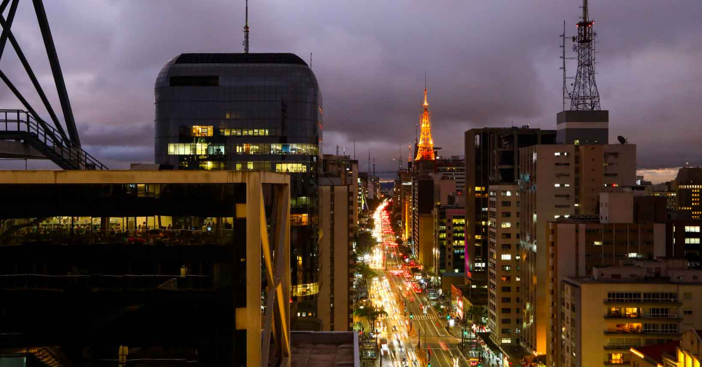
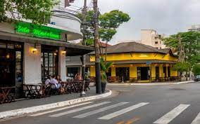
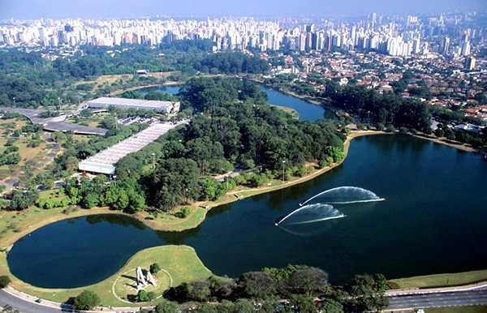

Passear na Avenida Paulista

Um dos principais centros financeiros da cidade, a Avenida Paulista também possui dirvesas opções de entretenimento. Endereço de museus de arte de São Paulo, do Teatro Gazetas e muitos outros,a região é de facil acesso graças as diversas linhas de onibus que cruzam a avenida e a linha de metro que passa por baixo dela.
Os bares da Vila Madalena

Depois de um dia de trabalho, nada melhor do que um bom chopp, um petisco e uma conversa em uma mesa de bar. opções de sobra na região das ruas Aspicuelta , Fadique Coutinho e Wisard
Parque Ibirapuera

Um dos cartões postais da cidade,o Parque dispões de mais de 1,5km² de area verde , lagos artificiais e pistas de cooper e ciclismo.e se isso nao fosse o suficiente,o Parque costuma serpalco de diversos eventos culturais ao longo do ano.